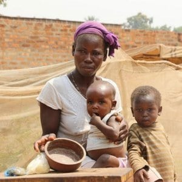
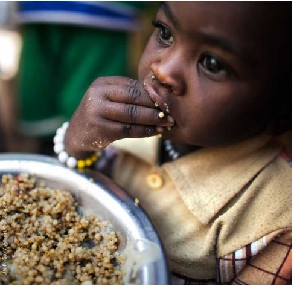

Principales Objetivos
- Poner fin al hambre y garantizar el acceso a alimentos adecuados:
- Garantizar acceso a alimentos inocuos, nutritivos y suficientes durante todo el año.
- Priorizar a personas pobres, vulnerables, lactantes y asegurar acceso universal.
-
Poner fin a todas las formas de malnutrición:
- Acabar con todas las formas de malnutrición.
- Alcanzar metas internacionales sobre retraso del crecimiento y emaciación en niños menores de 5 años.
- Atender necesidades nutricionales de adolescentes, mujeres embarazadas, lactantes y personas mayores.
-
Duplicar la productividad agrícola y los ingresos:
- Duplicar productividad e ingresos de productores de alimentos en pequeña escala.
- Priorizar a mujeres, pueblos indígenas, agricultores familiares, pastores y pescadores.
- Garantizar acceso seguro e igualitario a recursos, conocimientos y servicios.
-
Garantizar sistemas de producción de alimentos sostenibles:
- Implementar prácticas agrícolas sostenibles y resilientes.
- Aumentar la productividad y producción manteniendo la salud de los ecosistemas.
- Fortalecer adaptabilidad al cambio climático y mejorar calidad de tierra y suelo.
-
Mantener la diversidad genética:
- Conservar diversidad genética de semillas, plantas y animales.
- Utilizar bancos de semillas y plantas diversificados.
- Promover acceso justo y equitativo a beneficios de recursos genéticos.

